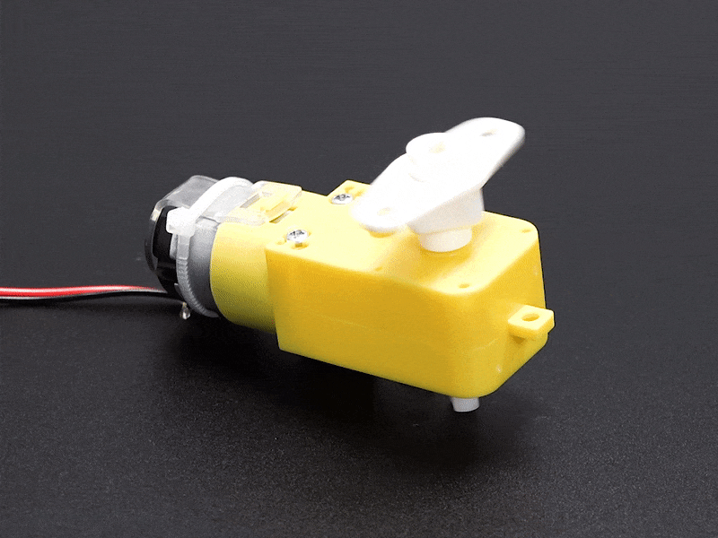
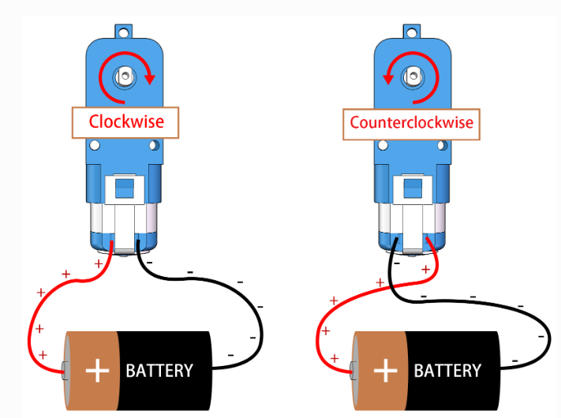
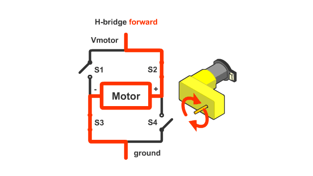
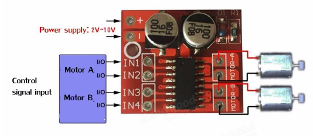
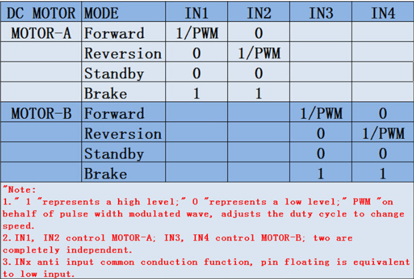
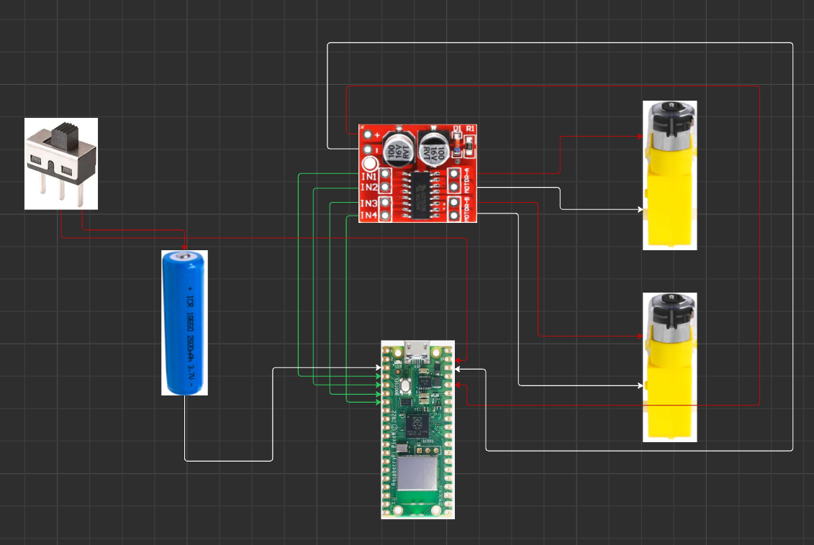

Learning Objectives
- Understand how DC motors and HW-354 motor driver board work.
- Learn how to connect and control DC motors using GPIO pins 2–5.
- Apply Object-Oriented Programming (OOP) principles in MicroPython.
- Implement safe control logic with proper exception handling.
Required Components
Step-by-Step Guide
Step 1: How the Hardware Works
DC Motors: DC motors rotate when a voltage is applied across their terminals. Direction depends on polarity.
DC gear motors are a fundamental component in robotics, converting electrical energy into mechanical rotation. The gearbox attached to the motor increases torque while reducing speed, making these motors ideal for driving wheels, tracks, or arms in robots. By reversing the polarity of the voltage applied to the motor, you can change its direction of rotation. The speed of a DC motor can be controlled by varying the voltage or using pulse-width modulation (PWM). In robotics, DC gear motors are valued for their simplicity, reliability, and ability to provide continuous rotation and strong torque for moving robot platforms or mechanisms.

How a DC gear motor works (GIF)
DC gear motor diagram (PNG)HW-354 Motor Driver (H-Bridge): The HW-354 uses H-bridge circuits to control the direction of each DC motor. An H-bridge allows current to flow in either direction through the motor, enabling both forward and backward rotation. By setting the input pins (IN1/IN2 for Motor A, IN3/IN4 for Motor B) high or low, you control which transistors in the H-bridge are active, thus changing the direction or stopping the motor. ENA/ENB should be connected to VCC for full speed, or you can use PWM for speed control (optional).

How an H-Bridge controls motor direction- Motor A (Left) → IN1, IN2
- Motor B (Right) → IN3, IN4
| Inputs | Behavior |
|---|---|
| 1, 0 | Forward |
| 0, 1 | Backward |
| 0, 0 | Stop |
| 1, 1 | Stop |

HW-354 Motor Driver Board (Top View)
HW-354 Motor Driver Pinout DiagramStep 2: Wiring the Pico W to Motor Driver

Wiring Diagram: Pico W 3.3V (out) to HW-354 Motor Driver VCC Raspberry Pi Pico W Pinout
Raspberry Pi Pico W Pinout
| HW-354 Pin | Connect to Pico W |
|---|---|
| IN1 | GP2 |
| IN2 | GP3 |
| IN3 | GP4 |
| IN4 | GP5 |
| GND | GND (common) |
| VCC | 3.3V (out) |
Step 3: Object-Oriented Programming (OOP) & Encapsulation
Object-Oriented Programming (OOP) is a programming paradigm that organizes code into reusable objects, each representing a real-world entity or concept. In robotics, OOP helps you structure your code so that each robot part (like a motor, sensor, or controller) is an object with its own properties and behaviors (methods). This makes your code easier to read, maintain, and expand as your robot projects grow.
Encapsulation is a core concept in OOP. It means bundling the data (attributes) and the methods (functions) that operate on that data into a single unit, or class. Encapsulation hides the internal details of how something works, exposing only what is necessary through a clean interface. For example, a Motor class might have methods like run(), stop(), and set_speed(), but the user of the class doesn't need to know how the motor is controlled at the hardware level—they just use the methods provided. This protects the internal state of the object and prevents accidental interference from other parts of the code.
By using OOP and encapsulation, you can build complex robotics projects in a modular way, making it easier to debug, upgrade, and share your code.
from machine import Pin
class RobotTank:
def __init__(self, in1_pin, in2_pin, in3_pin, in4_pin):
self.in1 = Pin(in1_pin, Pin.OUT)
self.in2 = Pin(in2_pin, Pin.OUT)
self.in3 = Pin(in3_pin, Pin.OUT)
self.in4 = Pin(in4_pin, Pin.OUT)
def forward(self):
self.in1.high()
self.in2.low()
self.in3.high()
self.in4.low()
def backward(self):
self.in1.low()
self.in2.high()
self.in3.low()
self.in4.high()
def turn_left(self):
self.in1.low()
self.in2.high()
self.in3.high()
self.in4.low()
def turn_right(self):
self.in1.high()
self.in2.low()
self.in3.low()
self.in4.high()
def stop(self):
self.in1.low()
self.in2.low()
self.in3.low()
self.in4.low()
Step 4: Test Code in main.py
from robot_tank import RobotTank
from time import sleep
# Use GPIO 2, 3, 4, 5 for IN1, IN2, IN3, IN4
tank = RobotTank(2, 3, 4, 5)
try:
print("Forward")
tank.forward()
sleep(2)
print("Left")
tank.turn_left()
sleep(1)
print("Right")
tank.turn_right()
sleep(1)
print("Backward")
tank.backward()
sleep(2)
except KeyboardInterrupt:
print("Interrupted!")
finally:
print("Stopping")
tank.stop()
Step 5: Key Concepts Explained
- GPIO Pin Control: We use digital output to control motor direction.
- OOP in MicroPython: The RobotTank class makes code modular and scalable.
- Safety First: The try...finally ensures motors stop even on an error.
Summary
- Learned how motor drivers and DC motors operate.
- Wired the robot using GPIO 2–5.
- Created and tested a reusable robot class with OOP.
- Handled motor shutdown gracefully with Python exceptions.